Dossier Personnel
Application full-stack de gestion de l'univers Goldorak
(UFO Robot Grendizer)
Sommaire détaillé
- 1. Contexte et objectifs du projet p.1
- 2. Analyse fonctionnelle et besoins p.3
- 3. Spécifications techniques globales p.5
- 4. Architecture logicielle (couches) p.7
- 5. Modélisation de la base de données p.9
- 5.1 Dictionnaire des données p.11
- 5.2 Contraintes d'intégrité & 6. Backend p.13
- 6.1 Middlewares et sécurité JWT p.15
- 6.2 Endpoints détaillés p.17
- 7. Frontend (React 19) p.19
- 8. Authentification OAuth2 et mode invité p.21
- 9. Conteneurisation Docker p.23
- 10. Fonctionnalités transverses p.25
- 11. Captures d'écran (preuves) p.27
- 12. Conclusion p.29
- Annexe A : Glossaire p.31
- Annexe B : Dépendances npm p.33
- Annexe C : Planning p.35
1. Contexte et objectifs du projet
Le projet Goldorak DB s'inscrit dans le cadre de ma formation de Développeur Web et Web Mobile à l'école La Plateforme (Martigues). Ce projet personnel vise à démontrer l'ensemble des compétences acquises durant le cycle de formation, en couvrant l'intégralité du cycle de développement d'une application web moderne.
L'univers de Goldorak (UFO Robot Grendizer), créé par Go Nagai, est une série culte des années 1970-1980. Elle regorge de personnages, de robots, de vaisseaux, d'armes et de monstres. L'objectif de cette application est de proposer aux fans une base de données interactive, sécurisée et immersive permettant de consulter, rechercher, ajouter, modifier et supprimer des entités liées à cette saga.
Le projet répond à un besoin de centralisation des données dispersées sur de multiples wikis et forums. Il apporte une interface moderne, responsive et sécurisée, avec des fonctionnalités avancées comme l'authentification sociale (OAuth2), un mode invité, un lecteur musical thématique, et un easter egg pour les fans de jeux vidéo rétro.
1.1 Périmètre fonctionnel
- Gestion des personnages : CRUD complet, champs (nom FR/JP, faction, rôle, âge, planète d'origine, description).
- Gestion des robots : CRUD complet, lien vers un pilote (personnage), type, hauteur, poids, description.
- Gestion des armes : CRUD complet, lien vers un robot, puissance, fréquence d'utilisation.
- Gestion des vaisseaux : CRUD complet, lien vers un pilote (optionnel), type, faction.
- Gestion des épisodes : CRUD complet, titres FR/JP, numéros, dates de diffusion, résumé.
- Gestion des monstres : CRUD complet, lien vers un épisode d'apparition, type, taille, puissance.
- Tableau de bord : Statistiques en temps réel, statut de l'API, informations utilisateur.
- Recherche et filtrage : Barre de recherche avec debounce (300ms) et pagination (10/20/50/100).
- Export CSV : Téléchargement des données de chaque entité au format CSV.
2. Analyse fonctionnelle et besoins
2.1 Cas d'utilisation principaux
- Acteur : Utilisateur non authentifié
- Accéder à la page de connexion.
- Se connecter via Google OAuth, GitHub OAuth ou en mode invité.
- Acteur : Utilisateur authentifié (lecture seule - invité)
- Consulter toutes les entités (personnages, robots, armes, etc.).
- Effectuer des recherches et filtrer les résultats.
- Exporter les données en CSV.
- Accéder au tableau de bord.
- Actions CRUD désactivées.
- Acteur : Utilisateur authentifié (admin - OAuth)
- Réaliser toutes les actions de l'invité.
- Ajouter, modifier et supprimer des entités (CRUD complet).
- Gérer les relations entre entités (ex : assigner un pilote à un robot).
2.2 Spécifications fonctionnelles détaillées
- Recherche avancée : La recherche s'effectue sur plusieurs champs (nom_fr, nom_jp, description, etc.) avec une insensibilité à la casse. Le déclenchement est différé de 300ms pour éviter les appels API intempestifs, et ne s'active qu'à partir de 2 caractères.
- Pagination : Les listes sont paginées côté serveur. L'utilisateur peut choisir le nombre d'éléments par page via un sélecteur dédié. Les boutons de navigation (précédent/suivant) sont stylisés aux couleurs de Goldorak.
- Tooltip de description : Toute description longue est affichée dans une modale/overlay au clic. Un seul tooltip est ouvert à la fois, et il se ferme automatiquement au scroll ou en cliquant à l'extérieur.
3. Spécifications techniques globales
L'application est développée selon une architecture full-stack séparée en deux parties : le frontend (client) et le backend (serveur). La communication s'effectue via une API REST sécurisée par JWT. L'ensemble est conteneurisé avec Docker pour garantir la reproductibilité des environnements.
| Composant | Technologie | Version | Rôle |
|---|---|---|---|
| Frontend | React | 19.2.0 | Interface utilisateur dynamique et réactive |
| Frontend | Vite | 7.2.5 | Outils de build et serveur de développement HMR |
| Frontend | React Router DOM | 7.13.0 | Routage côté client |
| Backend | Node.js | 20.15.0 LTS | Runtime JavaScript serveur |
| Backend | Express | 5.2.1 | Framework web pour l'API REST |
| Backend | Passport.js | 0.7.0 | Middleware d'authentification OAuth2 |
| Backend | jsonwebtoken | 9.0.3 | Génération et vérification des JWT |
| Base de données | MySQL | 8.0 | SGBDR relationnel |
| Driver BDD | mysql2 (promise) | 3.16.3 | Accès asynchrone à MySQL |
| Validation | express-validator | 7.3.1 | Validation des requêtes entrantes |
| Logging | Winston | 3.11.0 | Journalisation des événements et erreurs |
| Conteneurisation | Docker | 24.x | Isolation et packaging des services |
| Orchestration | Docker Compose | 2.x | Gestion multi-services |
| Serveur Web (prod) | Nginx | stable-alpine | Hébergement statique du build frontend |
4. Architecture logicielle (couches)
L'architecture est organisée selon un modèle client-serveur classique, avec une séparation stricte des responsabilités.
Cette architecture en couches permet une maintenabilité et une évolutivité optimales. Chaque couche est testable indépendamment.
5. Modélisation de la base de données
La base de données a été conçue selon les règles de la Troisième Forme Normale (3FN) afin d'éliminer toute redondance et garantir l'intégrité des données. Le diagramme entité-association ci-dessous illustre les 7 tables et leurs relations. La table users, dédiée à l'authentification, est volontairement isolée car elle n'a pas de relation directe avec les tables de l'univers Goldorak (elle sert uniquement à la gestion des comptes OAuth et invités).
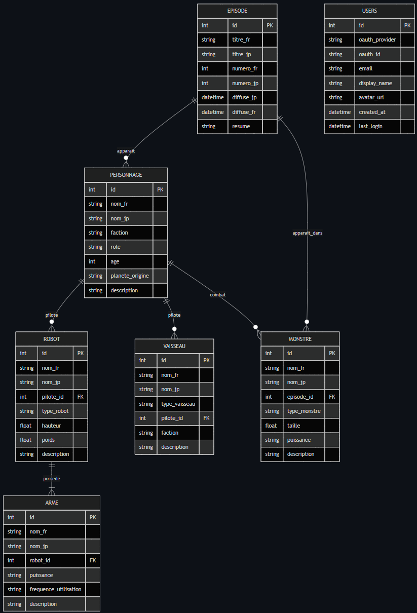
Légende : Les flèches pleines représentent des relations avec contraintes (ON DELETE CASCADE / SET NULL). La table users est représentée à part car elle sert exclusivement à l'authentification (OAuth2 et mode invité) et n'interfère pas avec les données de l'univers.
5.1 Dictionnaire des données (extrait)
| Table | Colonne | Type | Contrainte | Description |
|---|---|---|---|---|
| personnages | id | INT | PRIMARY KEY AUTO_INCREMENT | Identifiant unique |
| personnages | nom_fr | VARCHAR(100) | NOT NULL | Nom français du personnage |
| personnages | planete_origine | VARCHAR(100) | NULL | Planète d'origine (Euphor, Terre, Vega, etc.) |
| robots | pilote_id | INT | FOREIGN KEY (personnages.id) ON DELETE SET NULL | Référence au pilote |
| armes | robot_id | INT | FOREIGN KEY (robots.id) ON DELETE CASCADE | Robot propriétaire |
| monstres | episode_id | INT | FOREIGN KEY (episodes.id) ON DELETE SET NULL | Épisode d'apparition |
| users | id | INT | PRIMARY KEY AUTO_INCREMENT | Identifiant unique de l'utilisateur |
| users | oauth_provider | VARCHAR(50) | NOT NULL | google, github, guest |
| users | VARCHAR(255) | UNIQUE | Adresse email de l'utilisateur |
5.2 Contraintes d'intégrité
Les contraintes suivantes garantissent la cohérence des données :
- ON DELETE CASCADE : Appliquée sur
armes.robot_id. Si un robot est supprimé, toutes ses armes sont automatiquement supprimées. - ON DELETE SET NULL : Appliquée sur
robots.pilote_id,vaisseaux.pilote_idetmonstres.episode_id. Si un personnage ou un épisode est supprimé, la référence devient NULL (pas de perte en cascade). - UNIQUE : Sur
users.emailpour éviter les doublons de comptes.
6. Développement Backend (API REST)
Le backend est construit avec Node.js et Express. Il expose une API REST versionnée (prefixe /api/v1). Toutes les routes sensibles sont protégées par un middleware d'authentification JWT. Les données sont validées à l'aide d'express-validator avant toute opération en base.
6.1 Middlewares et sécurité JWT
Le middleware authMiddleware.js vérifie la présence et la validité du token JWT dans l'en-tête Authorization. Si le token est manquant, invalide ou expiré, une réponse 401 Unauthorized est renvoyée.
Ce middleware est appliqué sur toutes les routes CRUD. Les routes d'authentification (/auth/*), de santé (/health) et d'easter egg (/easter-egg) sont publiques.
6.2 Endpoints détaillés
| Méthode | Endpoint | Description | Protection |
|---|---|---|---|
| GET | /personnages | Liste paginée des personnages | JWT |
| GET | /personnages/:id | Détail d'un personnage | JWT |
| POST | /personnages | Création d'un personnage | JWT |
| PATCH | /personnages/:id | Modification partielle | JWT |
| DELETE | /personnages/:id | Suppression | JWT |
| GET | /robots | Liste des robots | JWT |
| POST | /robots | Création d'un robot | JWT |
| GET | /armes | Liste des armes | JWT |
| ... | ... | Même pattern pour vaisseaux, episodes, monstres | ... |
| GET | /stats | Statistiques globales (COUNT par table) | JWT |
| GET | /health | Statut de l'API et de la connexion DB | Public |
| POST | /auth/guest | Création d'un compte invité | Public |
| GET | /auth/verify | Vérification du token JWT | JWT |
Exemple de requête de création (POST /personnages) :
7. Développement Frontend (React 19)
Le frontend est une Single Page Application (SPA) développée avec React 19 et Vite. Elle communique avec l'API backend via des requêtes HTTP (fetch/Axios) et gère l'état global via le contexte d'authentification (AuthContext).
7.1 Composants et hooks personnalisés
- useFetchData.js : Hook générique pour les opérations CRUD. Gère chargement, erreur, pagination, recherche et appels API.
- useFormFields.js : Configure dynamiquement les champs des formulaires en fonction de l'entité.
- useReferenceData.js : Récupère les données des relations (ex : liste des personnages pour le formulaire robot). Formate en
ID X = Nom. - useKonamiCode.js : Écoute la séquence
↑ ↑ ↓ ↓ ← → ← → B Aet déclenche l'easter egg.
7.2 Gestion d'état et routage
L'état d'authentification est géré par AuthContext qui stocke l'utilisateur courant et le token JWT. Le composant ProtectedRoute vérifie l'authentification avant de rendre les routes privées.
8. Authentification OAuth2 et mode invité
L'authentification repose sur Passport.js avec les stratégies Google et GitHub. L'utilisateur est redirigé vers le fournisseur d'identité, puis revient sur le callback backend qui génère un JWT et redirige vers le frontend avec le token en paramètre.
Flux OAuth2 typique :
- Utilisateur clique sur "Se connecter avec Google".
- Redirection vers Google OAuth.
- Google redirige vers
/api/v1/auth/google/callbackavec un code d'autorisation. - Le backend échange le code contre les informations du profil utilisateur.
- L'utilisateur est créé ou mis à jour en base.
- Un JWT est généré et l'utilisateur est redirigé vers
/auth/callback?token=.... - Le frontend stocke le token dans
localStorageet redirige vers le tableau de bord.
9. Conteneurisation et déploiement (Docker)
L'application est entièrement conteneurisée avec Docker et orchestrée avec Docker Compose. Trois services sont définis :
- db : MySQL 8.0 avec volume persistant et health check.
- backend : Node.js / Express. Image
node:20-alpine. - frontend : Build multi-stage. Vite en dev, Nginx
stable-alpineen production.
10. Fonctionnalités transverses
10.1 Lecteur audio
Un lecteur audio thématique est intégré dans l'en-tête. Il utilise l'API HTML5 Audio et ne nécessite aucune dépendance externe. Il permet de diffuser 4 pistes MP3 emblématiques. Une playlist interactive permet de sélectionner directement un morceau.
10.2 Easter Egg (Code Konami)
Un clin d'œil aux jeux vidéo rétro : la séquence ↑ ↑ ↓ ↓ ← → ← → B A déclenche une animation/surprise. Un appel API est envoyé au backend pour tracer l'événement. Voici une illustration de l'effet produit :
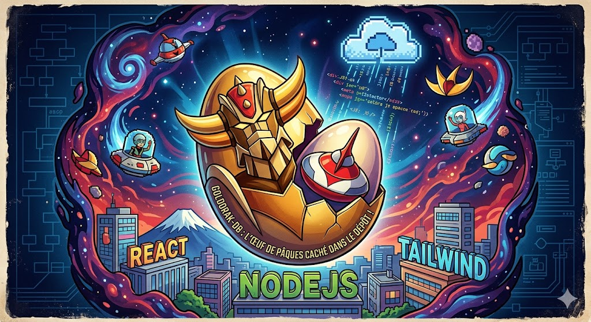
11. Captures d'écran (preuves)
Les captures suivantes illustrent concrètement les fonctionnalités développées. Cliquez sur une image pour l'agrandir
Page de connexion
Authentification Google/GitHub et mode invité.
📄 frontend/src/components/Login.jsx 🔗 http://localhost:5173/login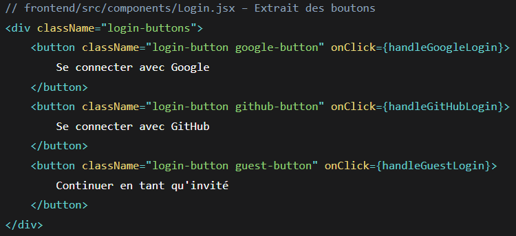
Login.jsx - Extrait des boutons
Composant React avec les boutons OAuth et invité.
📄 frontend/src/components/Login.jsx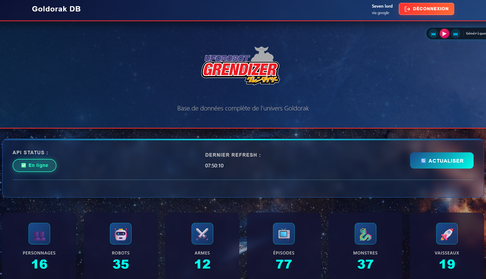
Tableau de bord
Volumes de données, statut API, informations utilisateur.
📄 frontend/src/AppWithAuth.jsx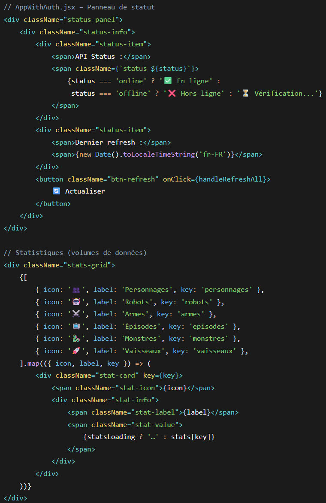
AppWithAuth.jsx - Panneau de statut
Affichage du statut API et des statistiques.
📄 frontend/src/AppWithAuth.jsx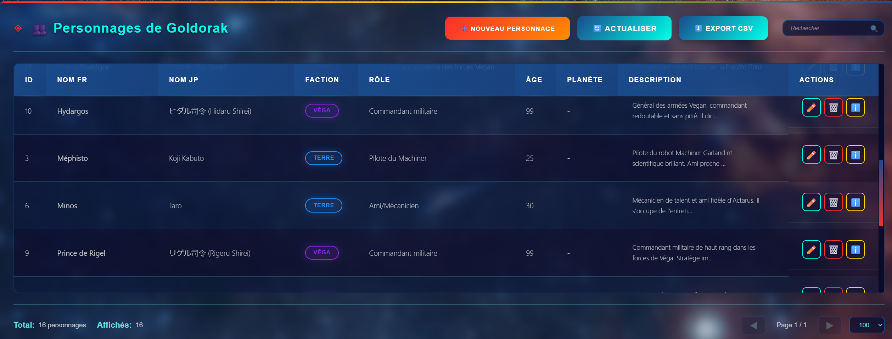
Catalogue des personnages
Vue générale avec badges de faction.
📄 frontend/src/components/Personnages.jsx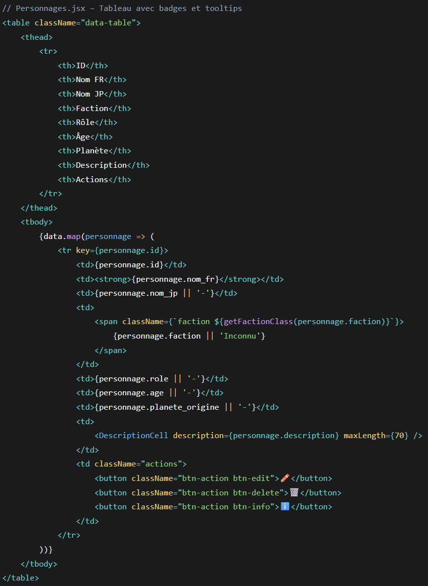
Personnages.jsx - Tableau avec badges
Rendu du tableau avec les badges de faction.
📄 frontend/src/components/Personnages.jsx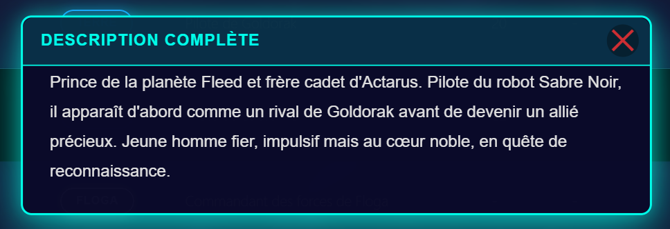
Tooltip de description
Affichage des descriptions longues au clic.
📄 frontend/src/components/DescriptionCell.jsx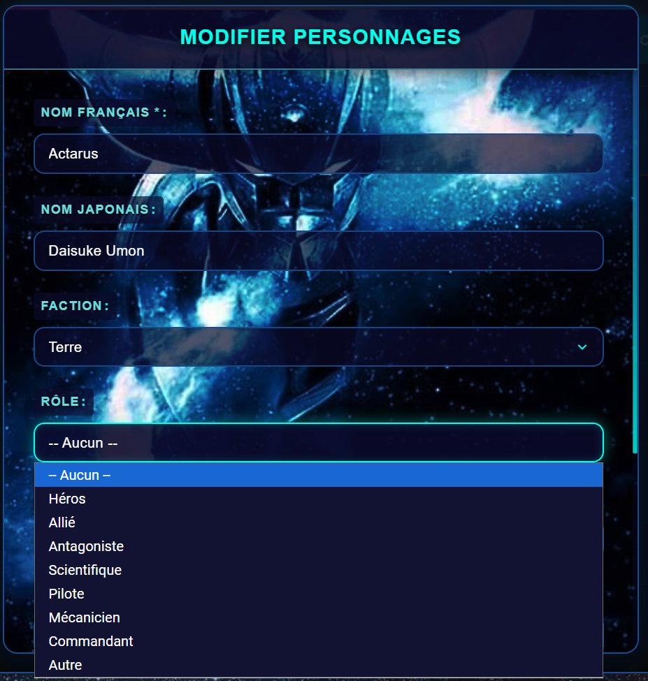
Modal CRUD dynamique
Champs relationnels affichant "ID X = Nom".
📄 frontend/src/components/Modal.jsx (extrait du rendu des champs select avec référence)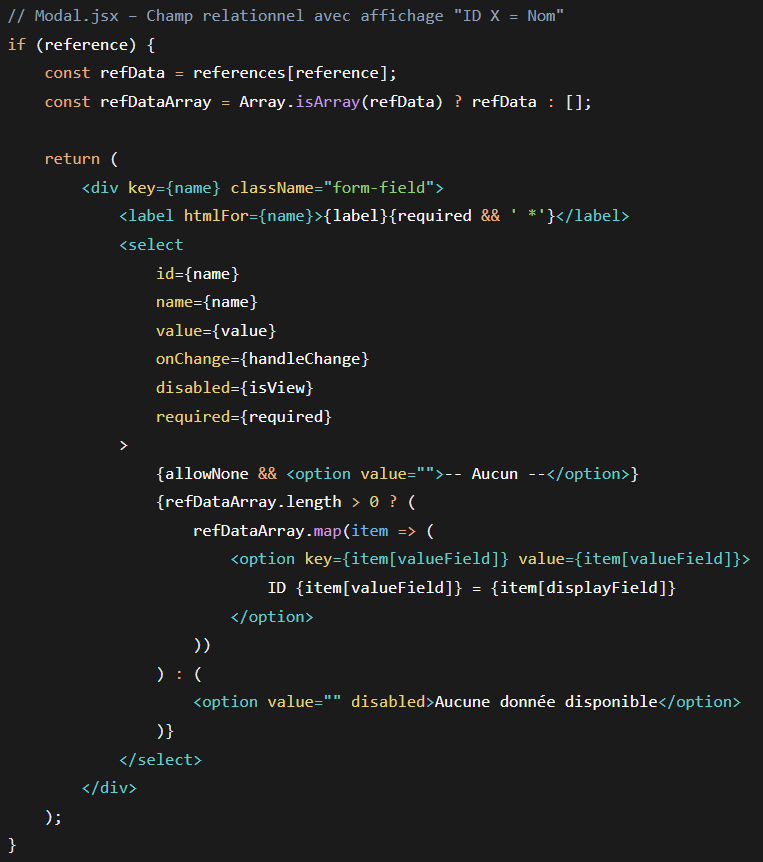
Modal.jsx - Champ relationnel
Affichage "ID X = Nom" pour les références.
📄 frontend/src/components/Modal.jsx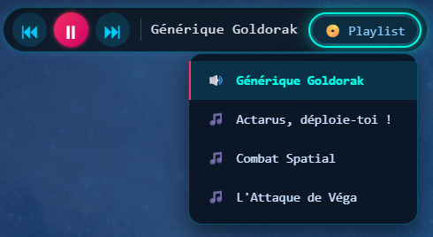
Lecteur musical
Playlist de 4 titres, contrôle lecture/pause.
📄 frontend/src/components/MusicPlayer.jsx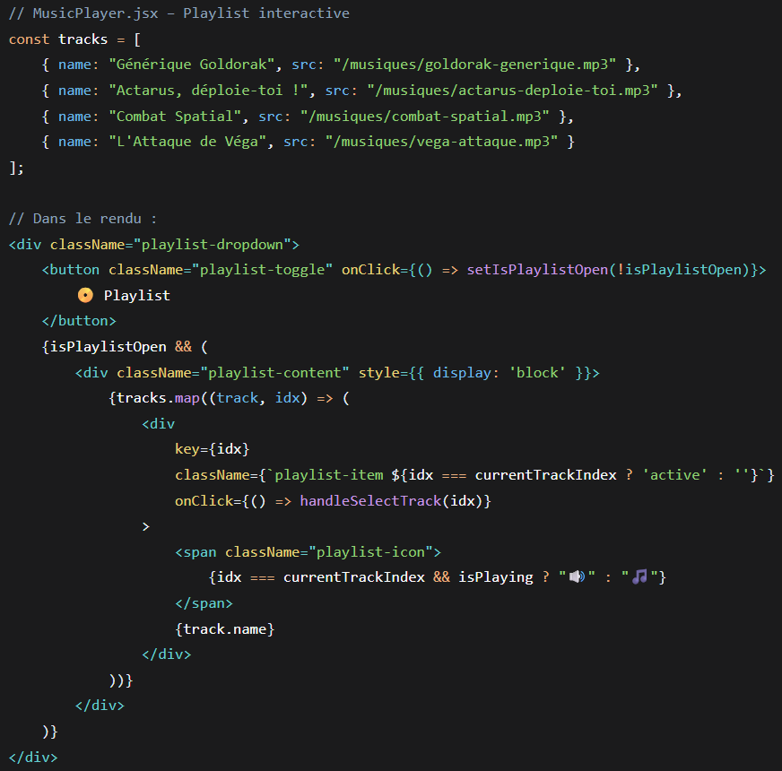
MusicPlayer.jsx - Playlist interactive
Affichage de la playlist et sélection des morceaux.
📄 frontend/src/components/MusicPlayer.jsx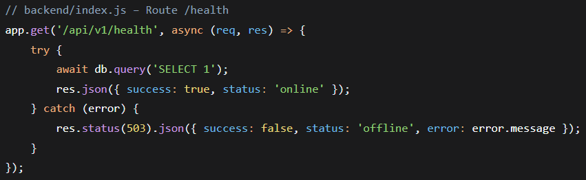
API Health Check
Endpoint /health avec connexion à MySQL.
🔗 curl http://localhost:8800/api/v1/health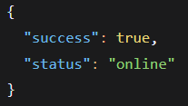
Réponse JSON /health
Statut "online" confirmant la connexion DB.
🔗 curl http://localhost:8800/api/v1/healthSchéma BDD (3FN)
Diagramme entité-association avec 7 tables et contraintes.
📄 fichier mysql/init.sql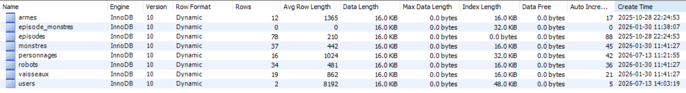
Statistiques des tables
Informations sur les tables InnoDB.
📄 fichier mysql/init.sql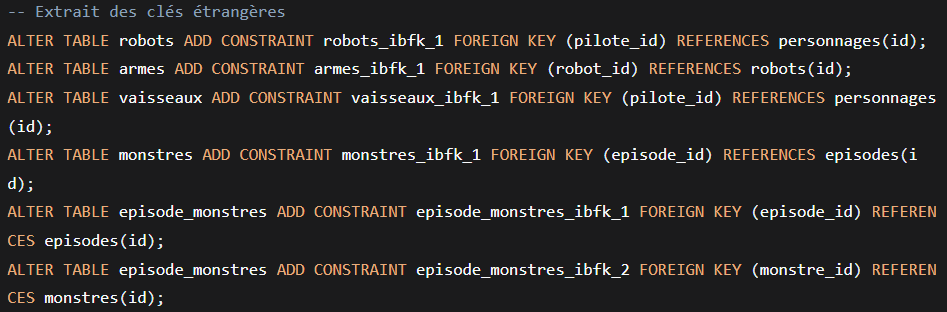
Clés étrangères
Extrait des contraintes FOREIGN KEY.
📄 fichier mysql/init.sql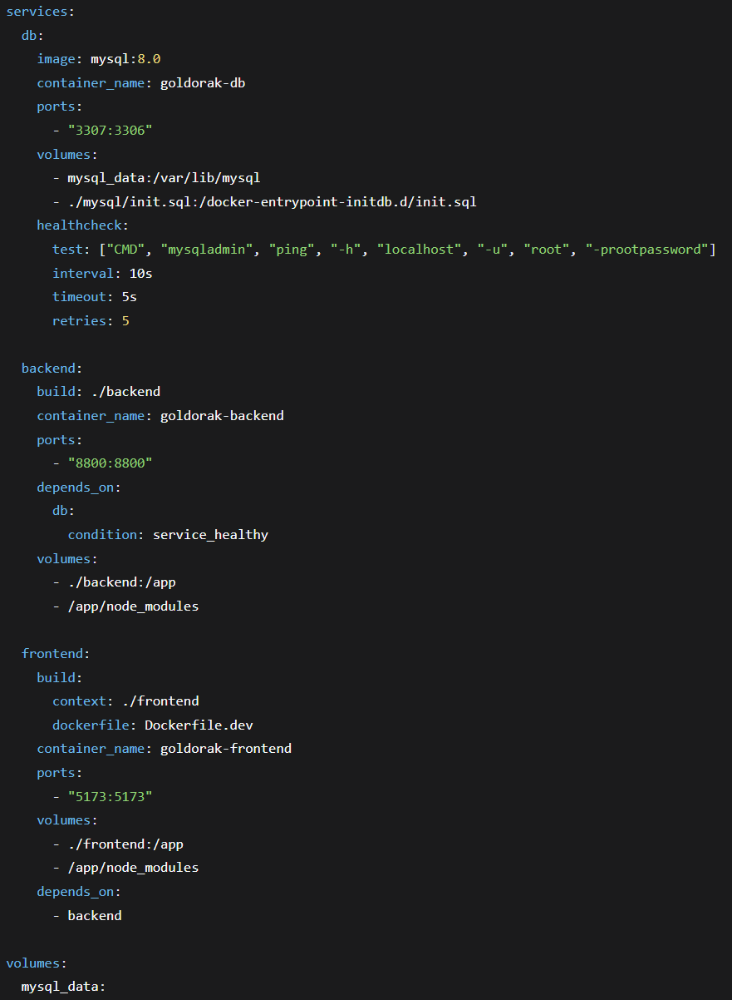
Docker & Orchestration
Extrait du docker-compose.yml avec health check.
📄 fichier docker-compose.yml à la racine du projet.
12. Conclusion et compétences validées
Le projet Goldorak DB V1 Reload couvre de manière exhaustive l'ensemble du périmètre du titre professionnel "Développeur Web et Web Mobile". Il démontre ma capacité à mener un projet de bout en bout, de l'analyse des besoins à la conteneurisation, en passant par la conception de base de données, le développement backend et frontend, et la mise en place d'une sécurité robuste.
Compétences validées :
- Frontend : Maquettage (Figma), React 19, hooks, routage, responsive design, tooltips, lecteur audio.
- Backend : API REST Express, OAuth2 (Google/GitHub), JWT, validation, logging Winston.
- Base de données : Modélisation 3FN, scripts SQL, relations, requêtes préparées.
- Déploiement : Docker, Docker Compose, build multi-stage (React → Nginx), variables d'environnement.
- Qualité et sécurité : Anti-injection SQL, CORS, cookies sécurisés, mode invité.
Ce projet incarne ma passion pour le développement web, mon souci du détail technique, et ma capacité à livrer une application professionnelle, immersive et parfaitement documentée.
Annexes
Annexe A : Glossaire technique
| Terme | Définition |
|---|---|
| JWT | JSON Web Token. Standard pour l'échange sécurisé de jetons d'authentification. |
| OAuth2 | Protocole d'autorisation déléguée permettant de s'authentifier via un tiers de confiance. |
| CRUD | Create, Read, Update, Delete. Les quatre opérations de base sur les données. |
| SPA | Single Page Application. Application web où le chargement des pages se fait de manière dynamique sans rechargement complet. |
| HMR | Hot Module Replacement. Technique permettant de mettre à jour les modules sans recharger la page. |
| 3FN | Troisième Forme Normale. Niveau de normalisation d'une base de données relationnelle. |
| Middleware | Fonction interceptant les requêtes HTTP pour effectuer des traitements (authentification, validation, logging). |
Annexe B : Dépendances complètes (npm)
| Package | Version | Environnement |
|---|---|---|
| react | 19.2.0 | Frontend |
| react-dom | 19.2.0 | Frontend |
| react-router-dom | 7.13.0 | Frontend |
| vite | 7.2.5 | Frontend (dev) |
| express | 5.2.1 | Backend |
| mysql2 | 3.16.3 | Backend |
| passport | 0.7.0 | Backend |
| passport-google-oauth20 | 2.0.0 | Backend |
| passport-github2 | 0.1.12 | Backend |
| jsonwebtoken | 9.0.3 | Backend |
| express-validator | 7.3.1 | Backend |
| winston | 3.11.0 | Backend |
| bcrypt | 5.1.1 | Backend |
| cors | 2.8.6 | Backend |
| dotenv | 17.2.3 | Backend |
Annexe C : Planning de développement
- Semaine 1-2 : Maquettes Figma, modélisation BDD.
- Semaine 3-4 : Backend (Express, routes CRUD, validation).
- Semaine 5-6 : Authentification OAuth2 et mode invité.
- Semaine 7-8 : Frontend (React, composants, hooks, routage).
- Semaine 9 : Conteneurisation (Dockerfiles, docker-compose).
- Semaine 10 : Tests, corrections, documentation (README.md).
- Semaine 11 : Finalisation du dossier professionnel.